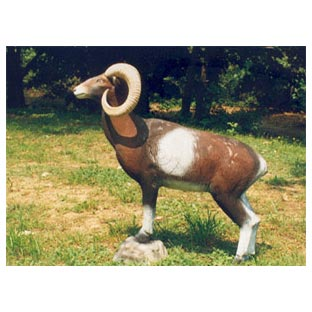
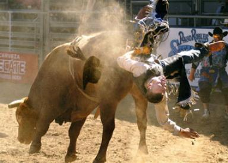

De: La Frikipedia, la enciclopedia extremadamente seria.
De: La Frikipedia, la enciclopedia extremadamente seria. De: La Frikipedia, la enciclopedia extremadamente seria.
El zodiaco es una alucinación que se provoca al fumar marihuana(entre otras cosas) y mirar hacia el cielo, esto tiene como resultado que cada una de las estrellas que veas será un animalito, duende o bicho que tira Hagua, y todas en conjunto resultaran ser un Zoológico el Zodiaco
En el año 3000,5 a.C. existió científico del Imperio azteca llamado Claudio Ptolomeo. Un buen día, Ptolomeo iba caminando luego de una fiesta de opio cuando de repente choco con una roca y cayo al suelo, lo cual le causo una cuádruplo fractura de cráneo. En medio del delirio, la conmoción y la materia gris, Ptolomeo comenzó a mirar hacia el cielo y noto que lo que quedaba de su cerebro comenzó a agrupar estrellas formando animalitos imaginarios y personas raras. Luego de un par de horas, una expedición marciana lo encontró y lo llevo a su nave espacial, donde le curo las heridas y lo devolvió a la tierra. Otra vez en su hogar, Ptolomeo recordó los animalitos que había imaginado Y los dibujo a todos en una hoja, para después asignarle a cada uno una fecha determinada.
Existen 12, especies de animalitos y personas raras, las cuales tienen ciertos poderes mágicos sobre las personas que nacen dentro de sus días.
| Nombre real | Nombre falso | Fecha | Descripción astrológica | Imagen |
|---|---|---|---|---|
| Oveja macho | Aries | 2 de enero - Hasta pasado mañana | La constelación consta de un billón de estrellas alineadas geométricamente en dirección bidimensional hacia la tierra, que observadas desde la torre de pisa adquieren la forma de una oveja pastando por un campo. |  |
| Toro Jebi | Tauro | Diciembre de 1492- Hasta mañana a las 2:34 PM | Este conjunto de estrellas esta unido por un lazo gigante de asteroides vaqueros(Algo así como los del lejano oeste) que impiden que las estrellas se salgan de sus orbitas y choquen entre si. Son un total de 3,42125 estrellas que si las miras patas para arriba y sumergido en el agua tendrán la forma de un toro que esta |
 |
| Hermanitos castro | Geminis | Comienzo de la guerra fría-Hasta que se muera Fidel | Es una constelación que tiene la forma de una hoz y un martillo. Esta es una constelación rebelde, que simplemente quiere ser completamente distinta a todas las demás, en lugar de tener estrellas pequeñas tiene soles y solo puede ser divisada desde una islita del caribe | |
| Cazuela de cangrejos | Cáncer | Durante la cuaresma | Esta formada por millares de meteoritos provenientes de Marte, esta constelación es divisible cuando una persona se toma cuanta cosa alcohólica se encuentre por delante antes de mirar al cielo. Comúnmente suelen identificarse un par de cangrejos con condimentos dentro de una cazuela, pero si el que mira el cielo acaba de salir de un boliche o fiesta suelen divisarse la cazuela de cangrejos junto a un chef y a una persona que se los come. | |
| Leonardo | Leo | Durante todos los días del año bisiesto | La constelación esta formada por una docena de estrellas y mas de 3000 pinceles que DaVinci puso en orbita. Es visible únicamente cuando se esta mirando hacia el suelo con los ojos cerrados, y se dice que la constelación tiene la forma de la Mona Lisa(Mucha gente cree que esta constelación fue creada por el mismo Leonardo) | |
| Virgen | Virgo | Solo visible para los castos | La constelación consta de miles de nebulosas que, según se cree, son los pensamientos obscenos de un adolescente. Ademas, se sabe que tiene compuestos químicos de Tungsteno y potasio. Tiene una forma muy parecida a la de un CD-RW y únicamente la divisan los que no tuvieron relaciones. | |
| Balanza electrónica | Libra | Es visible cuando cae la bolsa de valores | Es un conjunto de varios miles de estrellas netamente comercial, en esta constelación se encuentran todas las empresas multinacionales y espaciales. Tiene la forma de un billete de un dólar y, si el día esta despejado se logra ver la pirámide y el numero 1. | |
| Scorpion | Escorpio | 23 de enero-23,5 de enero | Esta constelación esta formada por todas las tripas y cráneos que arrojan los personajes de Mortal Kombat. Esto orbita alrededor de miles de estrellas que hace que la constelación tenga un color rojo sangre. | |
| Arquero de tiro largo de elite | Sagitario | Solo se vio durante 100 años | Descripción de la constelación: Según dicen antiguas escrituras, esta constelación era visible únicamente por los que sobrevivían a ser guillotinados y/o contagiados por la peste. Se encontró un grabado en piedra que afirma que la constelación tenia forma de arquero ingles. | |
| Chivito | Capricornio | 30 de febrero-34 de noviembre | Esta constelación esta compuesta por gases emanados por dios, además contiene varias miles de estrellas que únicamente se ven cuando uno es embestido por una cabra. | |
| Pecera | Acuario | Solo visible en épocas de tsunamis e inundaciones | Es una de las pocas constelaciones, que debido a su gran cantidad de agua, se cree que contiene vida mucho mas avanzada que la de los humanos, pero que es casi imposible que alcance a los delfines. | |
| Peces espada | Piscis | 4 de marzo - 30 de febrero | Esta formada por bicarbonato de sodio, manganeso, azul de metileno y alcohol etílico, sus estrellas son compuestos químicos altamente volátiles unidos con cola, la constelación es visible desde casi todo el mundo, exceptuando América, Europa, Asia África y Oceanía. |
| Signo | Así son | Así terminan |
|---|---|---|
| Oveja macho | Son gente realmente cabrona, suelen querer pelear con todo el mundo y siempre tienen la razón de todo. Todos los días andan tratado de conquistar al mundo y cosas así. | |
| Toro Jebi | La gente nacida sobre este signo suele recibir patadas bajas que la mayoría de las veces terminan en una profunda depresión. Muchas veces no son respetados por nadie e inevitablemente terminan siendo reprimidos y odiando a todo el mundo. | |
| Hermanitos Castro | Son gente rebelde, siempre van en contra a la corriente, nunca hacen lo que hacen todos y siempre están dependiendo de alguien. Se aíslan de todo el mundo debido a que no piensan igual. Cuando nace un hermanito castro, siempre nace otro en la misma familia, con la diferencia de que uno es bueno y el otro es malo (Evidentemente, no siempre sucede eso) | |
| Cazuela de cangrejos | Los cangrejianos son alterados cuando la pecera se posicióna paralelamente al angulo inferior del sol, lo que hace que los cangrejianos reciban un reflejo que los deja temporalmente ciegos y, a la larga con problemas psicológicos y sexuales. | |
| Leonardo | Generalmente, los nacidos en este signo tienen un gran desempeño artístico, lo cual les permite crear grandes obras o música y ganarse la vida con eso, aunque mayormente esas grandes cualidades se ven empañadas por los ovejos, los cuales atacan a los artistas jodiendolos a tal punto que terminan matándolos, o lo que es peor, les arruinan la carrera | |
| Virgen | Los virginos son personas que rara vez logran formar una pareja, tienen absolutamente todo lo que ahuyenta al sexo opuesto, haciendo que sea casi imposible que puedan aparearse. Los hombres son sucios, mal hablados, pobres y feos, mientras que las mujeres, sencillamente se parecen a los hombres pero con una pequeña diferencia que no vale la pena aclarar. | |
| Balanza electrónica | Los nacidos en este signo son personas que mayormente tienen problemas con la ley. Suele resultarles extremadamente fácil caer en las drogas y los delitos y, al no ser beneficiados por la erupción volcánica de las estrellas de saturno, los que comente delitos casi siempre terminan en la cárcel, y la balanza de la ley nunca esta a su favor. | |
| Scorpion | Los scorpianos son personas mayormente descendientes de Jack el destripador y Freddy Kruger entre otros. Disfrutan la desgracia ajena y se ríen de los problemas de todos los demás. Mayormente tiene un gran sed de sangre y viseras, lo que hace que muchos terminen siendo médicos o cirujanos. | Advertencia La imagen puede afectar a personas sensibles, pero si quieres verla puedes hacer clic aqui, Aca o sino date una vuelta por aca haz de cuanta que es un humano, así terminan. |
| Arquero de tiro largo de elite | Se creen los cupidos del universo, andan todo el día con sus arcos lanzando flechas de cupido cada vez que se enamoran, pero al igual que los virgianos, no tienen mucha suerte, ya que estas flechas suelen dar en el corazón matando al que la recibe. Hay muchos arquerianos que se han dado cuenta de esto y han cambiado la estrategia de seduccion. | |
| Chivito | Son personas que se pasan la vida con los cuernos sobre la cabeza, sus esposas / maridos (o ambos) los engañan constantemente y siempre terminan en una crisis nerviosa, en un cambio radical y estúpido en sus vidas o en suicidio. En cuanto al dinero, reciben herencias millonarias de familiares muertos extrañamente, aunque después de crear su testamento, ellos mueren de la misma manera.(Deja el cursor sobre la imagen para saber quien es) | |
| Pecera | Los peceros son gente mayormente adicta a la computadora, televisión y drogas entre otros, que viven casi sin contacto con el mundo exterior. Están como en una burbuja, y al no estar influenciados por otras personas, suelen tener sueños como conquistar el mundo y cosas así. | |
| Peces espada | Los nacidos en este signo son personas honestas y defiende sus cosas a capa y espada, pero cuentan con la suerte de que las cosas sobre las que son honestos y defienden tienen su origen en una mentira, así que siempre terminan mal. En cuanto a la fortuna, tienen tanta suerte que siempre ganan los números que ellos jugaron el día anterior, y realmente se envician bastante con el juego. |
Autor(es):
{kind=link}